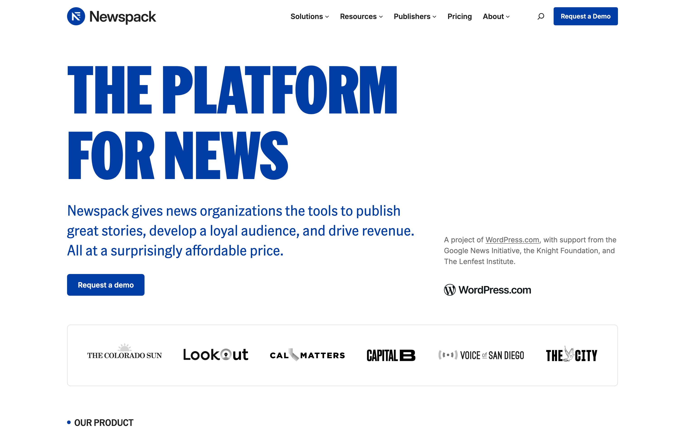

Capture or record. It's already styled.
This is what you get out of the box:
On brand, automatically
Cobalt backdrop, border, rounded corners, soft shadow — on a 3:2 canvas or true to shape.
Saved before you blink
Already a file and on your clipboard before the preview appears. Drag it into Slack.
Recordings included
Screen recordings get the same treatment: a styled 16:9 MP4, clicks rippling, trim built in.
Style existing files
Style an Image…, Style a Video…, and Make a Grid… live in the menu and Finder's Open With.
Ships with a skill
Installs the team screenshot skill for Claude Code and Codex, so your agent knows the house rules.
Annotate & redact
Zoom in tight, then arrows, rectangles, spotlight, counters, captions, and pixelate.
Nine keys to know
Hold ⌃⇧, pick a number:
⌃⇧1 Full screen
The whole display: desktop icons hidden, wallpaper swapped for the brand background.
⌃⇧2 Window
Hover to pick any window, captured with its true macOS corners and its real shadow.
⌃⇧3 Region
Drag an exact selection with a pixel-precision magnifier that snaps to screen edges.
⌃⇧4 Timed
Select a region or a window, then a countdown you can pause to stage vanishing UI.
⌃⇧5 Scrolling
Scroll through a long page, or let Auto-Scroll drive it, for one tall stitched shot.
⌃⇧6 Capture Text
Lift text straight off the screen onto your clipboard. Nothing styled, nothing saved.
⌃⇧7 Record Screen
A countdown, then a styled 16:9 clip of your region. Clicks ripple in the brand color.
Space Flip the mode
Tap mid-selection to switch between region and window, screenshots and recordings alike.
⌃⇧0 All-In-One
A floating toolbar with every capture mode plus Settings, for when the keys escape you.
For humans and agents alike
Newspack Shots isn't just a screenshot app for people. It's also an MCP server, so the AI agents you work with take screenshots through the same styling engine you do.
You press ⌃⇧2; your agent calls a tool. The results are pixel-identical. Docs, P2 posts, and help pages stay visually consistent no matter who, or what, captured them.
It comes with a skill: the team's screenshot playbook of canonical capture sizes, the website recipe, and how to annotate. The app installs it for Claude Code and Codex automatically and keeps it up to date.
These are the MCP tools the app hands your agent:
newspack-shots
The skill and the MCP server share the name.
annotate_image
Arrows, rectangles, spotlights, counters, caption chips, pixelate.
capture_fullscreen
Styled full-screen shot, saved and ready.
capture_region
An exact pixel region, 3:2 canvas by default.
capture_scrolling
Auto-scrolls a region and stitches it into one tall shot.
capture_window
A named app's window, true corners and shadow — 3:2 on request.
compose_grid
Lays 2 to 12 shots into one styled masonry grid.
list_windows
What's capturable, so agents don't guess window names.
read_text
OCR a screen region to read dialogs and errors. Nothing saved.
style_image
Brands any existing image, the way agents style website captures.
style_video
Brands workflow videos with title cards, captions, and click ripples.
video_frames
Extracts stills from a recording so agents can verify what it shows.
No setup: the app installs the skill and registers the MCP server for Claude Code and Codex on first launch. Installed an agent later? Open the app's Settings once and it wires itself up. Toggle it in Settings → General. See the README for details.
Install in a minute
- Download the DMG and drag Newspack Shots onto Applications.
- The app is unsigned, so macOS blocks it once: double-click it, click Done, then allow it under System Settings → Privacy & Security → Open Anyway.
- Trigger your first capture and grant Screen Recording, then quit and relaunch the app once.
- Working with AI agents? Nothing to do: the app registers the MCP server and installs the team skill for Claude Code and Codex automatically (opt out in Settings → General).
- That's it. Captures land styled, saved, and on your clipboard.